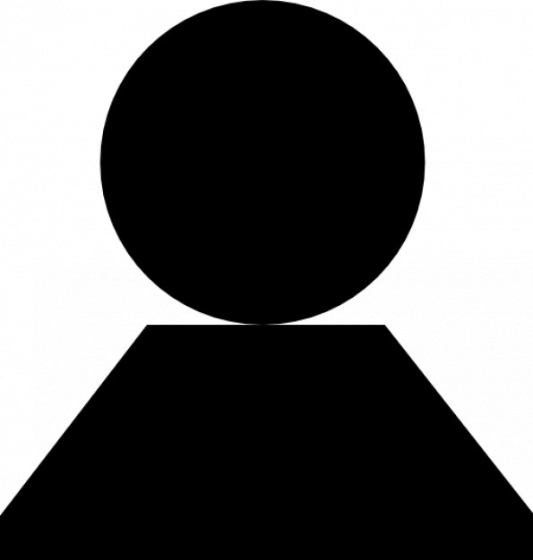

Informatie over mij
Mijn naam is Jochem de Kruijf en ik ben 16 jaar oud. Ik studeer op het davinci college en doe de opleiding ict. Later wil ik webapplicaties voor bedrijven maken.Ik kan ook doorleren indien het nodig is. In mij vrije tijd speel ik graag games. Ik houd ook van sporten zoals basketbal en voetbal. Om tot rust te komen na een dag werken laat ik graag mijn Duitse herder uit.
Eigenschappen
- Rustig
- Harde werker
- nieuwsgierig
- zelfstanding, maar kan ook goed in een groep werken